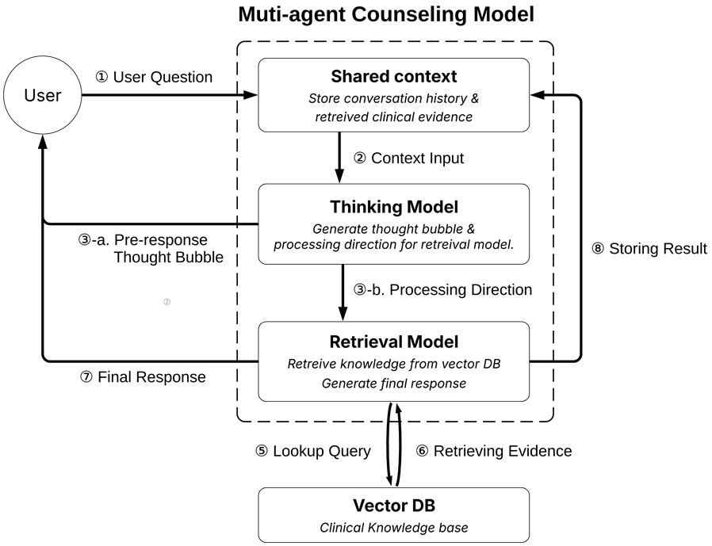
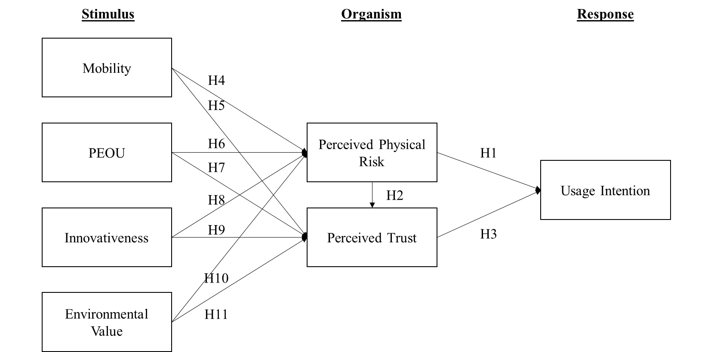
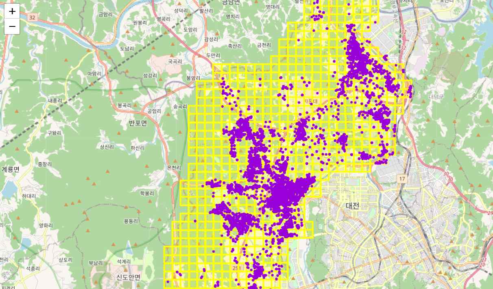
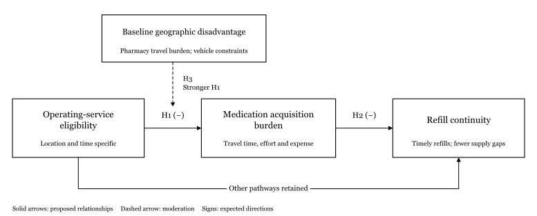

Forthcoming
Sectoral Heterogeneity in the Digital Transformation-Financial Performance Nexus: Evidence from Korean Manufacturing Firms
† Equal contribution.
Accepted · Forthcoming in Asian Journal of Technology Innovation
Ph.D. student · Information Systems
Business and Technology Management, KAIST
I study how digital technologies shape access to essential services, and how people experience the support they provide.
I study how digital technologies change people’s ability to access and benefit from essential services. My work begins with a distinction: a service can be available without being accessible in practice. Reaching a pharmacy may depend on where someone lives and how they travel; seeking care may depend on whether they feel understood or judged.
Across mobility, healthcare AI, and digital platforms, I examine how design choices and institutional rules interact with these constraints. I want to understand when technology expands people’s opportunities to obtain support or participate in a market, and what changes when that support is withdrawn.
Advised by Professor Chul Ho Lee. Chief Data Officer at TalentSeeker; data science instructor at Baekseok University.
† Equal contribution.
Accepted · Forthcoming in Asian Journal of Technology Innovation
ICIS 2026 Proceedings, Healthcare and Wellbeing, Paper 19. Completed research paper.
Journal of Information Technology Services, 23(6), 1–17.
Journal of Korea Technology Innovation Society, 27(3), 431–454.
Information Systems Review, 24(2), 67–88.
Wonguk Lee. In AI Transformation Era: Innovation and Challenges of Korean Industries Highlighted by KAIST. Yulgok Publishing.
Co-author.
Excellent Academic Book selection, National Academy of Sciences, Republic of Korea · 2025
Under revision · Second round
Under revision · Minor revision
Submitted
Under review
Technology adoption, physical risk, and trust among PMD users and non-users.
Under revision · Excellent Paper Award, Korea Society of IT Services
Transit complementarity, geographic flows, and local economic activity.
Under review
Work in progress
Work in progress
Ongoing manuscript development. The ICIS 2026 proceedings version is listed above.
Work in progress · Accepted for presentation at WITS
Presentation forthcoming.
Work in progress
Work in progress · Working title
Lead data ontology development, multi-agent systems, data-pipeline architecture, data engineering, and LLMOps. Government-supported projects include ontology-based recruitment AI and automated resume-data systems.
Course design and teaching in Python, pandas, data preparation, visualization, introductory statistics and prediction, responsible generative AI use, and analytical communication.
Scheduled to attend CES 2027 as a C-level speaker in my role as Chief Data Officer at TalentSeeker.
Protecting the Investor, Punishing the Retailer has been accepted for presentation. Presentation forthcoming.
Additional recognition
Outstanding Research Idea Award, BTM Seminar, KAIST — research on the withdrawal of AI bot advisors in P2P lending.

ICIS 2026 · Healthcare and Wellbeing
People may turn to an AI counselor to avoid being judged, yet still question whether its empathy is sincere. Our Thought-Bubbles study examines how the presentation of a chatbot’s response shapes perceived authenticity and judgment.
This work includes two online lab studies and a clinical study. My broader collaboration with Jeonbuk National University Hospital involves developing and studying an LLM/RAG chatbot for patients with schizophrenia.
Read the ICIS proceedings paper ↗
Behavioral research · Under review
How do risk and trust shape the decision to use a personal mobility device?
I compare users and non-users to understand how prior experience changes the relationships between mobility beliefs, perceived physical risk, trust, and usage intention.
444 respondents · PLS-SEM · Multi-group analysis
Manuscript details →
Urban mobility · Under revision
I secured and led a Yuseong District-supported project combining Tashu bike-sharing, public transit, Shinhan Card spending, and KT population-movement data.
The study examines first- and last-mile connections, local festivals, and the relationship between mobility and consumer activity.
GIS · Mobility and transaction data · Local policy evaluation
Excellent Paper Award, Korea Society of IT Services →A faster delivery system matters if it changes whether people can obtain the medication they need. This proposed study examines how prescription-drone eligibility affects the burden of obtaining medication, and whether that change supports refill continuity in places with limited pharmacy access.
Read the research proposal ↗Drone logistics studies document delivery performance, while a recent scoping review identifies limited evidence on adherence, clinical outcomes, and equity. Patient access theory helps distinguish service availability from the ability to obtain care.
The key question is whether extending a service’s reach removes the constraints that prevent people from obtaining medication. I distinguish geographic availability, the burden of acquiring medication, and refill continuity, while testing whether benefits vary with baseline disadvantage.

The project is at the proposal stage. SafeGraph transaction data have been secured; Planet imagery and complementary health-outcome data remain to be obtained. Imagery alone cannot establish medication receipt or health benefits.
College Station, Texas. A Texas pharmacy-board report records prescription-drone service beginning on 28 August 2023. Amazon’s later notice reports the pilot’s closure; the exact end date requires verification.
Salt Lake Valley, Utah. Intermountain’s announcement dated 4 October 2022 describes service beginning for selected eligible households. Historical coverage and continuity require verification.
OSM-supported road detection and road geometry, with physics-based and XGBoost speed recommendations developed with KAIST and industry collaborators.
Ontology-based recruitment, Graph-RAG and Graph-of-Thought reasoning, and agent prototype research for a global outbound recruitment service.
An open-web resume collection and AI recruitment support system, including recruitment data pipelines.
Research and engineering design for a recruitment-specific small language model, evidence retrieval, ontology mapping, evaluation, and processing workflows.
Data experimentation and bias-analysis support for a planned olive-production platform combining advanced sensing, blockchain, and edge AI semiconductors.
Selected patents and applications naming Wonguk Lee as an inventor.
Registered
Korean patent 10-2891011-00-00 · Registered 20 November 2025.
Korean application 10-2025-0100830 · Filed 24 July 2025.
Applicant / owner: TalentSeeker Co., Ltd. · Co-inventor: Wonguk Lee.
Registered
Korean patent 10-3027368-00-00 · Registered 29 September 2026.
Korean application 10-2025-0174900 · Filed 18 November 2025.
Applicant / owner: TalentSeeker Co., Ltd. · Co-inventor: Wonguk Lee.
Registered
Korean patent 10-3027373-00-00 · Registered 29 September 2026.
Korean application 10-2025-0176365 · Filed 19 November 2025.
Applicant / owner: TalentSeeker Co., Ltd. · Co-inventor: Wonguk Lee.
Registered
Korean patent 10-3035190-00-00 · Registered 13 October 2026.
Korean application 10-2025-0170399 · Filed 12 November 2025.
Applicant / owner: TalentSeeker Co., Ltd. · Co-inventor: Wonguk Lee.
Application filed
Korean application 10-2026-0082060 · Filed 7 May 2026.
Applicant / owner: TalentSeeker Co., Ltd. · Co-inventor: Wonguk Lee.
Application filed
Korean application 10-2026-0110525 · Filed 17 June 2026.
Applicant / owner: TalentSeeker Co., Ltd. · Co-inventor: Wonguk Lee.
International application filed
International application PCT/KR2026/009822 · Filed 22 July 2026.
Applicant / owner: TalentSeeker Co., Ltd. · Co-inventor: Wonguk Lee.
Related Korean application: 10-2025-0100830.
Application filed
Korean application 10-2025-0209757 · Filed 24 December 2025
Application filed
Korean application 10-2025-0207816 · Filed 23 December 2025
Application filed
Korean application 10-2024-0067992 · Filed 24 May 2024
Application specification
Korean patent application specification · 17 April 2024
Documents on my background and current research.
Academic collaboration and research data inquiries